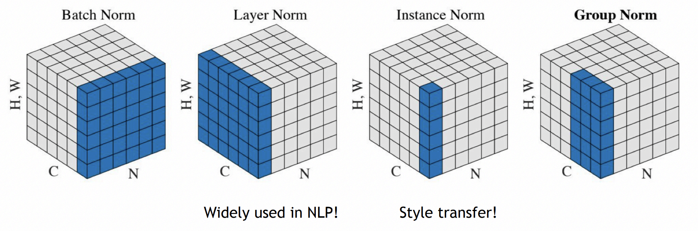

2025-03-26
相比于全连接层，CNN 有的优势为一方面参数量较少，一方面有 Equivariance. 而另一方面，全连接层由于过于坑坑洼洼所以导致虽说表达能力强，但是优化起来反而效果并不好.
区分 Iteration 和 Epoch：一个 Iteration 是一次 Batch 的操作，每个 Iteration 会更新一次参数. 而一个 Epoch 的经典定义是过一整遍 Data，相当于 \(N/B\) 次 Iteration. 每过一个 Epoch，会画 Loss Curve，测 Validation，并且保存模型（checkpoint）.
但是也不用墨守成规. 大一点的模型就可以每个小时做一次上述的工作. 并且对于特别大的模型，可能就只能完整过一遍数据. 那么就可以重新定义 Epoch.
Data Preparation
Mini-batch SGD：每次 Sample 一个批量的数据，然后用这些数据作 Forward 推理，计算损失函数，然后再做 Backprop 得到梯度，然后更新参数.
注意需要对数据作 Shuffle 再将数据按顺序分为若干个 batch. 因为原本训练数据可能和顺序有强烈关系（比如分类），导致一开始的几个 batch 全都是猫或者全都是狗，那么就很不对. 我们希望每一个 Batch 的梯度的期望和整个数据的梯度的期望是相同的，只不过噪声大一些，而并非偏离.
分 batch 的时候是在 data loader 中干的活.
然后我们要先对数据做一些预处理.
Zero-center：数据分部一般中心都不是原点. 而考虑到 ReLU 对是否 >0 很敏感，所以我肯定还是希望数据在正负间均匀分布. 所以我们可以让数据减掉平均值使得期望在 \(0\).
Normalize Data：我们还可以让每一个维度除以它的标准差，使得每个维度大致服从高斯分布. 这样就能防止某个维度特别大导致 learning rate 就不能兼顾.
Normalization 的优势的另一个解释，是就拿最简单的二分类为例，如果数据点都在离原点比较远，那么稍微动一下参数就可能导致在数据点的位置变化很大，导致优化起来困难.
但是要注意一件事情，就是不能导致 Information Loss. 若这些信息是最终任务所需要的，而却被 Normalize 掉了，那么就弄巧成拙了.
于是我们再看一下上面的预处理操作. 这个 Mean 应当对所有数据所有像素点，每个通道求出一个 Mean 去减掉. 一方面如果每张图片都求 Mean 那么会导致纯色图片直接没了，另一方面如果每个像素求 Mean 那么导致丧失平移不变性. 所以我们要求的是 Per-Channel 的 Mean 和 Std.
但这样的 Per-Channel 其实也是有 Information Loss 的. 比如假如数据集中红色非常不重要，所有的点 R 值都差不多，std 很小，但你做了上述操作就导致放的特别大，图的信息其实就扭曲了. 所以要这个要对不同的数据集做具体分析，有些时候除掉 std 反而是反作用.
Weight Initialization
我们一个简单的想法就是一个固定方差的期望为 \(0\) 的 Gaussian 分布. 这对于比较浅的网络没啥问题.
但是我们加深网络. 假如我们使用 tanh 激活函数，那么会有一个问题，就是越往深处跑，input 的分布越来越窄，故梯度的分布也越来越窄. 到后面梯度会变得很小.
如果增加 std 呢？那么会导致第一层数据绝大多数都分布在 \(\pm 1\)，然后到后面就也持续保持在很大的位置. 所以减少 std 会导致后面分布太窄，增加 std 会导致第一层分布都集中在两端.
所以其实问题就是，第一层 std 不能太大，而后面层 std 要适当增大. 这就引出了 Xavier Initialization. 对于 \(I\times O\) 的层，那么取 std 为 \(\sqrt{\frac{1}{I}}\). 这可以使得每一层的方差期望大概不变.
一个简单的推导是 \(Var(y)=Var(\sum x_iw_i)=I\times Var(x_iw_i)=IVar(x_i)Var(w_i))\)，所以我们希望 \(Var(w_i)=\frac{1}{I}\)，所以取 std 为 \(\frac{1}{\sqrt{I}}\).
其实我们上面没考虑到 TanH. 而 tanh 本来就是压缩 Variance 的所以确实还会减少，但速率明显变慢.
而对于卷积层，上面的参数 \(I=k^2\times c\)，其中 \(c\) 为 input channels.
但是 ReLU 就不对了. 因为 ReLU 会改变均值并删掉 <0 的部分，于是对分布的 variance 会每次 /2. 所以不能和上面一样忽略 tanh 的影响.
所以我们需要做一个修正，具体而言其实取 std 为 \(\sqrt{\frac{2}{I}}\) 就行啦. 这是 He 在 2015 得到的一则结果，极大提升了使用 ReLU 的 CNN 的稳定性.
其实 Initialization 是可以有很多事情的活. 但就先这样了.
Optimization
有两个重要的东西，Optimizer 和 Learning Rate.
SGD：最简单的减少梯度乘上 Learning Rate. 但是有一些问题.
一个问题是不同维度间太不统一了. 意思就是，比如我们在一个扁扁的椭圆的等高线上，那么纵向梯度大而横向梯度小，但是我们却最主要的方向是需要横向移动. 训练的时候纵向的抖动就特别严重.
第二个问题就是鞍点（Saddle Points），即导数为 \(0\) 但是并非极值. 并且在高维的情况下这是很普遍的，会导致 loss 在平台若干时间，然后运气好就从逃逸方向逃出来了，很神秘的“顿悟”感.
第三个问题就是小批量噪声很多. 第四个问题就是为我们一方面希望在不好的 Local minima 跳出去，而又希望在好的地方停留，是矛盾的.
一个改善方法是加 Momentum.
假如我们上一步的步伐是 \(v_{i-1}\)，那么我们就让这次走的步伐是梯度再加上 \(\rho v_{i-1}\)（最后乘学习率），其中 \(\rho\) 是一个较大的值，比如 \(0.99\). 即保持一个惯性.
比如这就解决了第一个问题. 纵向的 Momentum 会抵消纵向的抖动，而横向的 Momentum 会累积起来. 而第二个问题就可以尽量减少在 Saddle Point 的停留，而增加逃逸速度. 噪声也可以因为 Momentum 从而进行平滑.
加上对 Momentum 的 Bias correction，并且记录前两个时刻的速度方向，那么就得到了一个 Adam. Adam 的 Default 是 \(\beta_1=0.9\)，\(\beta_2=0.999\)，而学习率为 \(10^{-3}\).
实际上这些超参数是可以进行理论推导，是可以根据模型和数据找到比较好的超参数的.
Learning Rate 大可能会导致最后在谷底附近弹跳，小可能会导致收敛过慢.
一般来说分类问题 \(10^{-7}\) 到 \(10^{-3}\) 是一个比较合理的学习率.
还有一个方法就是做 Learning Rate 的 Schedule. 一开始设置较大的学习率，之后再变小.
例如 ResNet 就采用了 30, 60, 90 个 Epoch 后分别学习率乘上 \(0.1\)，而也有一些别的 Schedule 方法，比如让线性下降，或 \(\alpha_t=\alpha_0/\sqrt{t}\) 等等.
但需要注意，这些都是应该主要是要根据 Iteration 做判断. Data size 的变化会改变经典 Epoch 所跑的 Iteration 数. Batch size 变化也会要有所影响. 并且也需要和计算资源相关.
一个来自经验的 Rule：Batch Size 变大 \(N\) 倍，Initial Learning Rate 也可以变大 \(N\) 倍.
如果 Learning Rate 一开始太大那容易炸. 于是一个办法可能是，有一个 Linear 的 Warm up，一开始先花很快的时间线性上涨.
Normalization
Underfit 一般有两个原因：模型 Capacity 太小，以及学得不够好. 有两个减少 Underfit 的办法.
第一个是 Batch Norm. Batch Norm 插入在线性层和激活函数中间. 形成 L-B-R 结构. 每个 Batch Norm 层有两个可学习的参数 \(\beta\) 和 \(\gamma\). 对于 Input \(x\)，计算出每个 Channel 的均值 \(\mu_j\) 和方差 \(\sigma^2_j\). 然后我们就能通过这两个来获得归一化之后的 \(\hat x_{i,j}\). 但归一化可能使得模型容量受限. 所以我们要允许设置我们想要的 Bias \(\beta\) 和 std \(\gamma\). 也就是说 Batch Norm 层输出的结果是 \(\gamma\hat x+\beta\). 这两个参数一开始 \(\beta=0\) 而 \(\gamma=1\).
而在测试的时候，使用训练时候见过的 \(\mu\) 和 \(\sigma^2\) 的 Running Mean. 于是在测试的时候，Batch Norm 就变成了一个简单的线性操作.
Batch Norm 的好处有：赋予了 ReLU 更强的操控性，让很深的神经网络训练更快更平稳，可以容忍更高的学习率，对 Initialization 更 Robust.
但代价是什么呢？首先 Train 和 Eval 的表现是不一样的. 这在 Batch Size 小的时候是很有问题的. 所以可以发现这会导致 Eval Mode 的影响很不好.

Layer Norm 对所有的 Channel 共同算出一个 Mean. 在 CNN 中，不同的 Channel 代表不同的 Feature，Layer Norm 其实表现是不好的. 而 Instance Norm 则对不同的 Channel 不同的 Batch 都分别做归一化. 而 Group Norm 则将 Channel 分成若干个 Group，每个 Group 做 Layer Norm.
Group Norm 在 Batch Size 小的情况下，超越了 Batch Norm.
这三个 Norm 的共同特点是没有 Test time 和 Training time 的差异.